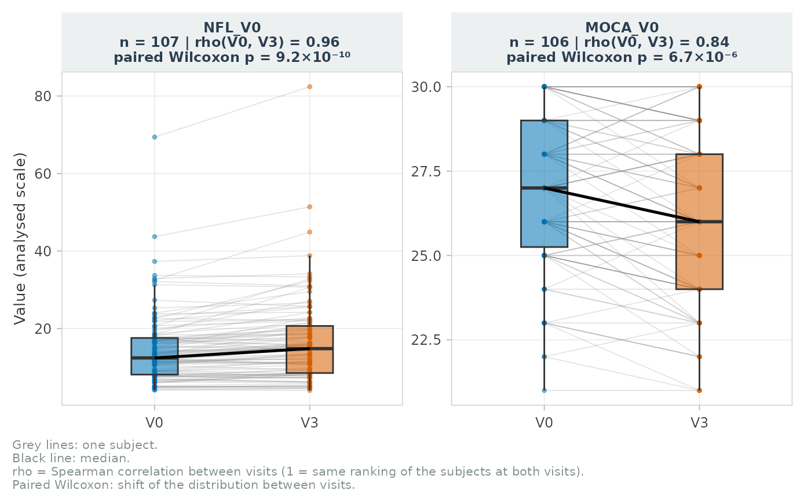

Paired visits: one line per subject between two visits
Source:R/plot-visits.R
plot_paired_visits.RdTwo overlaid distributions (V0 and V3) can be identical while every subject moves. This plot shows the subject-level changes: one line per subject, a boxplot per visit and the median line. The panel title gives the number of paired subjects, the Spearman correlation between visits (stability of the ranking) and the paired Wilcoxon test (shift of the distribution).
Usage
plot_paired_visits(
data,
vars,
id_col,
visits = c("V0", "V3"),
labels = NULL,
ncol = 4,
palette = c("#0072B2", "#D55E00"),
title = NULL,
subtitle = NULL,
base_size = 10,
transitions = FALSE,
split = c("median", "mean", "quantile", "manual"),
split_prob = 0.5,
split_cut = NULL,
split_ref = c("visit", "first"),
transition_mode = c("detailed", "crossing"),
transition_palette = NULL
)Arguments
- data
One row per subject (wide format).
- vars
First-visit numeric variables (names or tidyselect), e.g.
NFL_V0; the second-visit column is found withvisit_swap().- id_col
Subject identifier.
- visits
The two visit suffixes.
- labels
Optional named vector of labels.
- ncol
Number of columns of panels.
- palette
Colours of the two visits.
- title, subtitle
Titles.
- base_size
Base font size.
- transitions
Colour the lines by High / Low transition.
- split
Threshold rule:
"median","mean","quantile"(split_prob) or"manual"(split_cut, then required for every variable).- split_prob
Probability of the
"quantile"rule.- split_cut
Manual threshold(s), named by first-visit variable (override
splitfor these variables), or one unnamed value for all, on the plotted scale.- split_ref
"visit": threshold computed at each visit (insensitive to a global shift);"first": threshold of the first visit applied at both. Manual thresholds are the same at both visits.- transition_mode
"detailed"(High -> High, Low -> Low, High -> Low, Low -> High) or"crossing"(Same side, High -> Low, Low -> High).- transition_palette
Named colours of the transitions (
NULL: default).
Value
A ggplot with the attributes "transitions" (one row per subject x
variable, when transitions = TRUE) and "summary" (one row per
variable: n, rho, Wilcoxon p, thresholds, % changing side, kappa).
Details
With transitions = TRUE, each subject is "High" or "Low" at each visit
with respect to a threshold (median by default) and its line is coloured by
its transition; the threshold of each visit is drawn as a dashed segment,
and the panel title adds the share of subjects changing side and Cohen's
kappa of the High / Low status (kappa < 0: inverted ranking).
Examples
plot_paired_visits(cohort_sim, c(NFL_V0, MOCA_V0), id_col = ID)

p <- plot_paired_visits(cohort_sim, NFL_V0, id_col = ID, transitions = TRUE)
attr(p, "summary")
#> # A tibble: 1 × 8
#> var n rho p t0 t1 pct_change kappa
#> <chr> <int> <dbl> <dbl> <dbl> <dbl> <dbl> <dbl>
#> 1 NFL_V0 107 0.964 9.21e-10 12.4 14.8 5.61 0.888